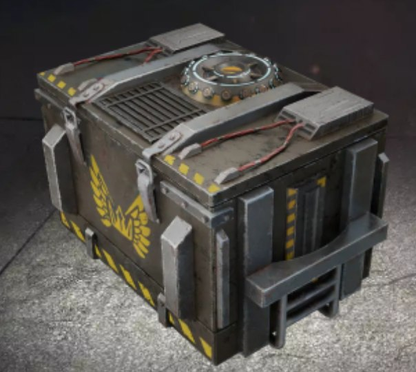
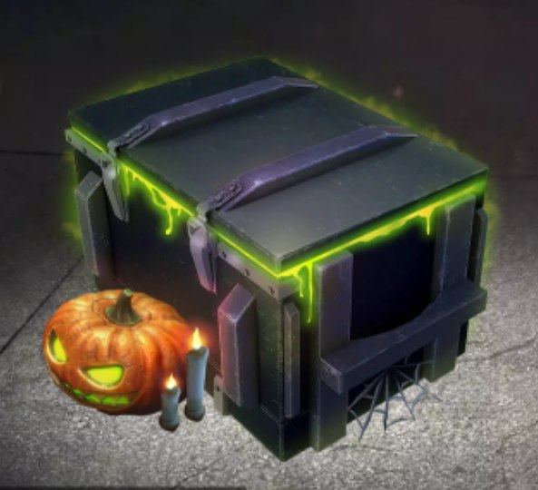

- Контейнер FVE Defender
-

Контейнер FVE Defender — це спеціальний скринька-приз у грі WoT Blitz, який при відкритті дає шанс отримати танк FVE Defender або інші предмети серії Defender. Ймовірність, що він випаде, не дуже велика (наприклад, подібні контейнери мають шанс близько 5 %) (за аналогією з іншими контейнерами Defenders). World of Tanks Blitz Основна цінність контейнера — це можливість отримати новий танк преміум-класу без необхідності купівлі за золото чи ресурси.
Автор: WarGaming Group
- Контейнер "Погана Компанія"
-

Контейнер «Погана компанія» — це спеціальний контейнер в грі, випущений під час тематичних подій (зокрема, Хелловіна). BLITZ FOX HUB У контейнері можуть міститися різні нагороди: від рідкісної техніки до легендарних аватарів і косметичних предметів.
Автор: WarGaming Group